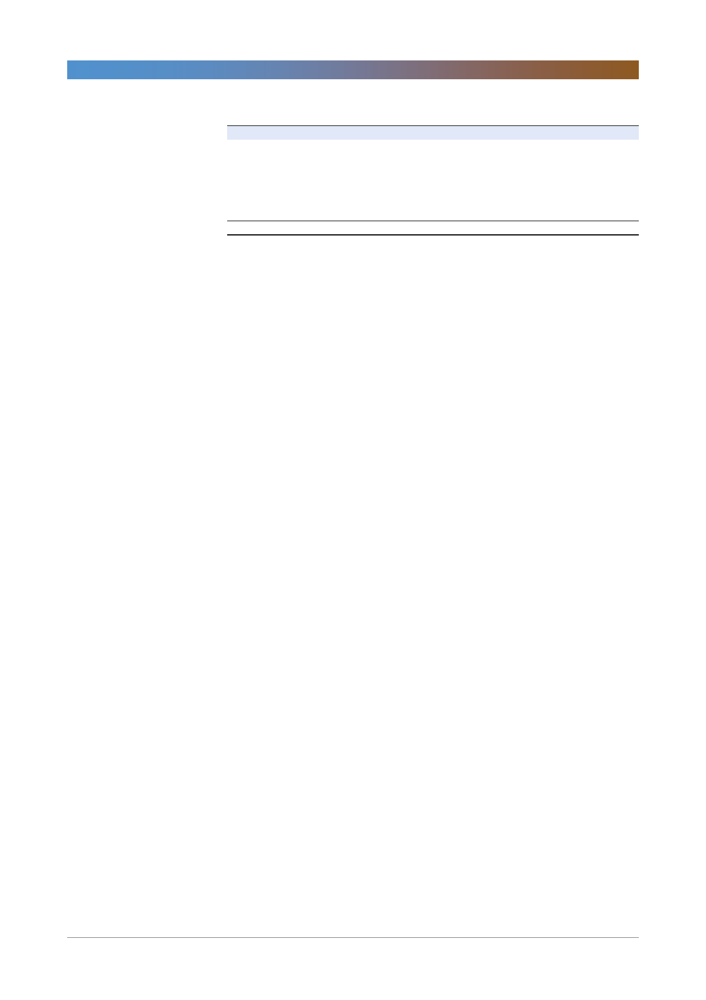

<표 3> SotP 밸류에이션
사업가치
투자유가증권
총자산가치
순부채
총 순자산가치
발행주식수(천주)
적정주가(원)
자료: 한국투자증권
롯데케미칼(011170)
가정
2019F 수정 EV/EBITDA 3.5x
(단위: 십억원)
8,219
2,969
11,187
2,155
9,023
34,275
263,521
기업개요 및 용어해설
롯데케미칼은 1976년에 설립된 순수석유화학회사로 롯데그룹의 계열사이며 2005년 롯데대산유화(2003년에 LG화학과
컨소시엄으로 인수한 현대석유화학)와 합병하였음. 2004년에는 케이피케미칼(PTA 제조업체), 2010년에는 Titan
Chemical(말레이시아 최대 석유화학기업)을 인수하였음. 현재 여수와 대산 두 곳에 총 210만톤/년의 NCC 설비를 보유
하고 있으며 합성수지(PE, PP, PC, PET 등), 화성 제품(EO/G, MMA, BD, SM 등), 기초유분(벤젠, 톨루엔, MX)을 생산
하고 있음.
BD(butadiene): 납사 분해시 부생하는 C4유분에서 추출하거나 부탄을 이용해 제조, 합성고무, ABS 등의 원료
EG(ethylene glycol): EO를 고온, 고압에서 물과 반응시켜 제조하며 주로 폴리에스터의 원료로 사용
TPA(tere-phthalic acid): PX를 원료로 제조하며 EG와 함께 투입되어 폴리에스터 섬유, PET bottle, 폴리에스터
타이어코드 등의 원료로 사용됨, 테레프탈산으로도 읽음
PTA(purified terephthalic acid): 고순도 처리된 TPA
PX(para xylene): MX로 제조하며 TPA, DMT의 원료로 대규모 소비됨
4